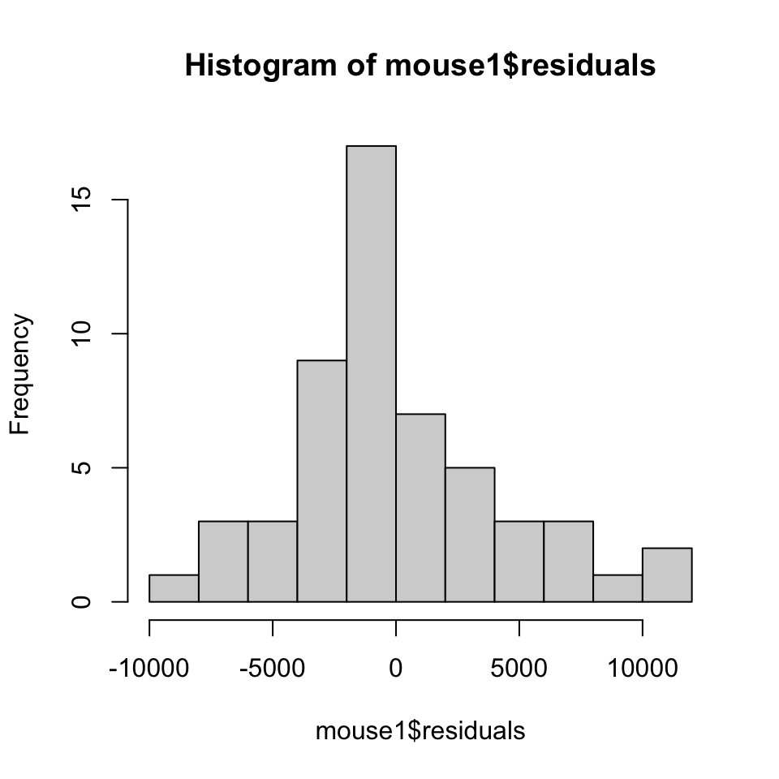

Adding extra variables to a linear model
So far we’ve seen how the linear model can cope with both factors and continuous variables as explanatory variables, and that the way that variance is partitioned for both types of explanatory variable is fundamentally the same. Linear models can also cope with more than one explanatory variable: so for two variables the variance explained by the first variable is partitioned as before, giving us the treatment variance for variable 1, and the error variance. The error variance is then further partitioned into the treatment variance that is accounted for by the second variable, leaving the final error variance. This allows us to analyse the effect of several different things that might influence your variable of interest at the same time, giving some important benefits over analysing each explanatory variable’s effect separately:
Fitting a single model reduces the number of statistical tests which we need to do, reducing the probability of type 1 errors.
We can sometimes detect effects which we would not see in single variable analyses, because the linear model allows us to ask the question “what is the effect of variable Y when we have already taken the effect of variable X into account?”.
We can statistically control for variables if we wish to: so in a study with height and weight as explanatory variables we can ask the question “What is the effect of weight when height has been taken into account?” — in other words, what is the effect of an individual being heavier or lighter than would be expected for someone of that height.
We can look for interactions between explanatory variables which arise when the effect of one variable depends on the level of the other.
In this tutorial we’ll look at analysing linear models with more than one factor as the explanatory variables. These linear models are often called “multi-factor ANOVA” or you might see them called a “two-way ANOVA” or similar depending on the number of explanatory factors used.
Two-factor linear model example
The data we’ll be looking at here come from a study on the effect that paternal exposure to nicotine has on mice, looking particularly at the behaviour of their descendants, as published by McCarthy and co-authors in 20181. The dataset we will use is a small subset of what was presented in their paper, and deals with the spontaneous locomotor activity that the F1 offspring of nicotine exposed or control males mated with unexposed females exhibited over a 12 hour period. Locomotor activity was measured by placing the animals in a testing chamber with a series of infra-red beams arranged in a grid, and each time a beam was broken this was logged as a single locomotory event. Our dataset includes data from both male and female F1 offspring.
Let’s load it from github and check its structure.
mouse_movement <-
read.csv(
"https://github.com/rjknell/Linear_models/raw/master/data/McCarthy_mice_activity.csv",
stringsAsFactors = TRUE
)
str(mouse_movement)'data.frame': 54 obs. of 3 variables:
$ Treatment: Factor w/ 2 levels "Nicotine","Water": 2 2 2 2 2 2 2 2 2 2 ...
$ Sex : Factor w/ 2 levels "Female","Male": 1 1 1 1 1 1 1 1 1 1 ...
$ SLA : int 10743 10228 5060 9007 9036 20977 9003 7452 15655 6786 ...Because we specified stringsAsFactors = TRUE as an argument to read.csv() both Treatment and Sexhave been imported as factors. SLA (Spontaneous Locomotory Activity) is our response variable and is the count of all the recorded times an infra-red beam was broken during the 12-hour period. Sex is the sex of the F1 mouse in question, and Treatment is the treatment the father of the mouse was exposed to: “Water” if the mouse was given plain drinking water and “Nicotine” if the mouse was given drinking water containing 200µg/mL nicotine for 12 weeks. Let’s look at our sample sizes for each factor combination.
table(mouse_movement$Sex:mouse_movement$Treatment)
Female:Nicotine Female:Water Male:Nicotine Male:Water
11 13 12 18 The data are somewhat unbalanced, with sample sizes ranging from 11 to 18 and overall rather more data for the controls whose fathers were given water. Nonetheless there’s no combination with a really small or large sample size by comparison to the others (i.e. no combination with 3, or 300). Now let’s visualise these data with a boxplot.
boxplot(SLA ~ Treatment * Sex,
data = mouse_movement,
xlab = "Treatment & Sex",
ylab = "SLA(movements/12h)")
Figure 1. Boxplot showing Spontaneous Locomotor Activity (SLA) as measured in IR beam triggers over 12 hours for mice with paternal expsoure to either nicotine or water.
Looking at this we can see some patterns: spontaneous movement rates seem higher in females and in animals with fathers exposed to nicotine, but as always we need to do some statistics to give us an idea of how confident we can be that thses patterns aren’t just a consequence of sampling error. The boxplots are also at least approximately symmetrical which tells us that these data aren’t strongly skewed. There do, however, seem to be some differences in variance between the groups such that the mice with fathers exposed to nicotine have rather wider IQRs than those whose fathers were given plain water. It’s not 100% clear how severe this is but we should keep an eye out for evidence of heterogeneous variances when we look at our diagnostic plots.
Fitting linear models with multiple explanatory variables in R simply involves adding new elements to the formula that is the first argument of the lm() function.
SLA ~ Treatment will fit a model with Treatment as the explanatory factor.
SLA ~ Treatment + Sex will fit a model with both Treatment and Sex as the explanatory factors but with no interaction between them — in other words the main effects of the two factors only.
SLA ~ Treatment + Sex + Treatment:Sex will fit a model with both Treatment and Sex as explanatory factors but also with the interaction between the two (specified here by Treatment:Sex).
SLA ~ Treatment * Sex will, in this case, fit the same model as the previous example. The asterisk * means "fit all the main effects and also all the interactions. Here there can only be one interaction because there are only two explanatory factors. If there were a third factor, however, for example Diet (good or bad) then
If we were to want to add a third variable (e.g.Diet) we could do it like this:
SLA ~ Treatment*Sex*Diet would fit all three main effects, the two-way interactions between Treatment and Sex, between Treatment and Diet and between Diet and Sex, and also the three-way interaction between Treatment, Sex and Diet.
SLA ~ Treatment + Sex + Diet + Treatment:Sex + Treatment:Diet will fit all three main effects plus two interaction terms only, namely those between Treatment and Sex and between Treatment and our fictional Diet factor.
We’ll fit a model with both main effects and the interaction, and then bring up an ANOVA table to get an idea of the statistical significance of our explanatory variables.
mouse1 <- lm(SLA ~ Treatment * Sex, data = mouse_movement)
anova(mouse1)Analysis of Variance Table
Response: SLA
Df Sum Sq Mean Sq F value Pr(>F)
Treatment 1 304437730 304437730 15.4427 0.0002617 ***
Sex 1 253190901 253190901 12.8432 0.0007670 ***
Treatment:Sex 1 11186 11186 0.0006 0.9810908
Residuals 50 985703577 19714072
---
Signif. codes: 0 '***' 0.001 '**' 0.01 '*' 0.05 '.' 0.1 ' ' 1The basic structure here is familiar from the single factor ANOVA tutorial. Instead of simply partitioning the variance into that explained by the treatment and the remaining, error variance, however, we have now partitioned it into that explained by the two main effects of Treatment and Sex, plus a further sum of squares etc. for the interaction between the two and then the error variance (which R calls the Residuals of course).
The various elements such as the Mean square values and the F-statistics are calculated in the same way as for any other linear model, so MS Sex = SS Sex (253190901) divided by df Sex (1), and F for Sex is MS Sex/MS Residuals (or error) = 253190901/19714072 = 12.84316 on 1 and 50 df which is highly significant (p = 0.000767). Before we go further with interpreting this model, of course, we should make sure that the data are well behaved and the model is a good fit.
1: McCarthy, D.M., Morgan, T.J., Jr, Lowe, S.E., Williamson, M.J., Spencer, T.J., Biederman, J. & Bhide, P.G. (2018) Nicotine exposure of male mice produces behavioral impairment in multiple generations of descendants. PLoS biology, 16, e2006497.
Model diagnostics
Every time you fit a linear model you should check your diagnostic plots to make sure that the assumptions that we make about our data are met, or at least are approximately met. Let’s do that for our example.
plot(mouse1, which = 1:2)

The residuals versus fitted values plot shows little to concern us. The differences in variance between groups that we saw in the boxplot earlier are there but overall these are not really substantial enough to cause us serious concern. The qq plot is a bit odd with some deviation from the line of equality but most of the deviations aren’t too major. There are some datapoints that have high residual values (6, 48, 38) but again these are not enough to really cause a lot of concern. It’s a bit of a judgement call in this case but it’s most likely OK. We can do a further check by drawing a histogram of the residuals.
hist(mouse1$residuals)
You can see from the histogram that the distribution of the residuals is a bit pointier than a normal distribution, with a big sharp peak in the centre of the distribution, and there’s a suggestion of some positive skew. Overall though the distribution of the residuals is at least approximately normal and close to symmetrical. Given the general robustness of ANOVA to small to medium deviations from the fundamental assumptions about the data these fairly small departures from the ideal distribution are not likely to be affecting our output in any substantial way.
As a side note, this sort of error distribution is one of the main reasons why these tutorials are all using real data from real science. When you fit models to real data, there is always something about the diagnostic plots that makes you scratch your head. You never see residuals perfectly lined up in your qq plot, or with no pattern whatsoever in the residuals versus fitted values. The thing to ask yourself is whether whatever weirdness you’re seeing is of a magnitude that might change the results of your analysis. If it is (and knowing what will and what won’t is often a matter of experience) then you need to do something about it. If it isn’t then don’t. If you’re not sure, then maybe try something (data transformation, removing highly influential and worrying data points), refit your model, compare it with the original and see if it makes a difference. If it doesn’t then you know you’re good.
Significance of model terms
Now that we’re reasonably happy about our diagnostics, let’s look at the output of our analysis again. We’ve already seen that we have a non-significant interaction term but the two main effects are significant. How reliable are these p-values though? Take a look at what happens when we change the order of the explanatory variables in our model formula. Here’s that first ANOVA table again.
# ANOVA table for first model
anova(mouse1)Analysis of Variance Table
Response: SLA
Df Sum Sq Mean Sq F value Pr(>F)
Treatment 1 304437730 304437730 15.4427 0.0002617 ***
Sex 1 253190901 253190901 12.8432 0.0007670 ***
Treatment:Sex 1 11186 11186 0.0006 0.9810908
Residuals 50 985703577 19714072
---
Signif. codes: 0 '***' 0.001 '**' 0.01 '*' 0.05 '.' 0.1 ' ' 1
Here’s the ANOVA table for the model with the explanatory variables in the opposite order — so Sex * Treatment instead of Treatment * Sex.
# Fit model with Sex first instead of treatment
mouse2 <- lm(SLA ~ Sex * Treatment, data = mouse_movement)
# ANOVA table for second model
anova(mouse2)Analysis of Variance Table
Response: SLA
Df Sum Sq Mean Sq F value Pr(>F)
Sex 1 285860317 285860317 14.5003 0.0003840 ***
Treatment 1 271768315 271768315 13.7855 0.0005161 ***
Sex:Treatment 1 11186 11186 0.0006 0.9810908
Residuals 50 985703577 19714072
---
Signif. codes: 0 '***' 0.001 '**' 0.01 '*' 0.05 '.' 0.1 ' ' 1The statistics for the two main effects change depending on whether their order in the formula. When treatment is first we have F1,50 = 15.44, p = 0.000262, but when treatment is the second factor in the model we have F1,50 = 13.79, p = 0.000516. This is a consequence of the way that a linear model is fitted: as explained at the start of the tutorial the first term is based on the sum of squares calculated from the raw data, but for the second term the sum of squares is calculated using the error sum of squares once the sum of squares for the first term has been removed. This method of calculating the sums of squares is called type I sums of squares or sometimes sequential sums of squares, and is why the SS, MS, F-statistic and p-value can change depending on the order of the terms in the model — this will happen so long as there is any kind of correlation between the explanatory variables, and even when the explanatory variables are factors this will happen unless the design is perfectly balanced, with exactly equal sample sizes for every combination of treatments.
Do we need to worry about this here? Maybe. One option is to use something called the type III sums of squares — a different way of calculating the sums of squares which treats every term as if it were the last term entered into a model, so in this case the SS for Sex is calculated based on data which has already had the SS for Treatment and for the interaction partitioned out, and the SS for Treatment is calculated based on data which has already had the SS for Sex and for the interaction partitioned out. Some statistical software (e.g. SAS) uses these type III sums of squares by default, so if your analysis is giving a different result from one done with different software then this is worth bearing in mind as a possible explanation. There are also type II sums of squares but these only work in models where there is no interaction term.
There are two options for calculating significance using type III sums of squares. One is to use the drop1() function in base R. This actually carries out a deletion test on the model: it refits the model with the term in question removed and then compares it with the original model using a partial F-test, which is a version of the F-test that can be used to compare nested models. This is the equivalent of calculating the type III sums of squares. drop1() will only delete terms that can sensibly be compared with the full model so if we have both explanatory variables also present in an interaction term it will only give us a p-value for the interaction:
drop1(mouse1, test = "F")Two things to note here are 1) the p-value here is the same as the one from the ANOVA table. This is because the interaction term is entered last in the model anyway. If there were other explanatory variables which were not included in the interaction term we would also get deletion tests for these, however, and they would be different. 2) As we will discuss later, if there is an interaction then the p-values for the main effects included in the interaction term are fairly meaningless, so in this case the p-value for the interaction term only is arguably the only appropriate one to look at.
For the second option, we can use the Anova() function from the car package. Note that this function has a capital A to distinguish it clearly and straightforwardly from the anova() function we’ve already used. What could possibly go wrong?
library(car)
Anova(mouse1, type = "III")Anova Table (Type III tests)
Response: SLA
Sum Sq Df F value Pr(>F)
(Intercept) 2335600163 1 118.4738 8.595e-15 ***
Treatment 124803539 1 6.3307 0.01512 *
Sex 111031527 1 5.6321 0.02152 *
Treatment:Sex 11186 1 0.0006 0.98109
Residuals 985703577 50
---
Signif. codes: 0 '***' 0.001 '**' 0.01 '*' 0.05 '.' 0.1 ' ' 1This supports what we’ve already calculated using the type I sums which are the default option in R: both main effects are significant but the interaction term is non-significant.
Since the interaction is very far from significant, and there’s nothing to indicate that there is an important interaction effect here, we can consider generating a new and more parsimonious model without the interaction term. There is more in the upcoming tutorial on model selection on the reasoning behind this and when it might or might not be justified.
mouse3 <- lm(SLA ~ Treatment + Sex, data = mouse_movement)
Anova(mouse3, type = "III")Anova Table (Type III tests)
Response: SLA
Sum Sq Df F value Pr(>F)
(Intercept) 3311548281 1 171.337 < 2.2e-16 ***
Treatment 271768315 1 14.061 0.0004530 ***
Sex 253190901 1 13.100 0.0006783 ***
Residuals 985714763 51
---
Signif. codes: 0 '***' 0.001 '**' 0.01 '*' 0.05 '.' 0.1 ' ' 1Our main effects remain statistically significant in the new reduced model. Now that we have a fitted model and we’re happy with our understanding of the signficance of the various terms, let’s think about interpreting it.
summary() output for two-factor ANOVA
To interpret our model we’ll need to use the coefficients table from the model summary. This video explains these work. You’ve possibly already watched the first 11 minutes in the single factor ANOVA tutorial — the rest of the video extends this to two-factor ANOVA. There’s quite a lot of it so maybe get a cup of tea.
summary() output for our model
summary(mouse3)
Call:
lm(formula = SLA ~ Treatment + Sex, data = mouse_movement)
Residuals:
Min 1Q Median 3Q Max
-8316.1 -2495.3 -501.9 2244.7 11029.1
Coefficients:
Estimate Std. Error t value Pr(>|t|)
(Intercept) 14554 1112 13.090 < 2e-16 ***
TreatmentWater -4545 1212 -3.750 0.000453 ***
SexMale -4365 1206 -3.619 0.000678 ***
---
Signif. codes: 0 '***' 0.001 '**' 0.01 '*' 0.05 '.' 0.1 ' ' 1
Residual standard error: 4396 on 51 degrees of freedom
Multiple R-squared: 0.3613, Adjusted R-squared: 0.3363
F-statistic: 14.43 on 2 and 51 DF, p-value: 1.084e-05We have an ANOVA with two factors, each of which has two treatments. This gives us a fairly straightforward coefficients table. As with the single factor ANOVA models, the first row of the coefficients table is labelled (Intercept). Instead of telling us the estimated mean for the treatment that comes first in the alphabet this is now the estimated mean for the treatment combination with the levels for each factor that are first alphabetically. Our factor levels are
levels(mouse_movement$Treatment)[1] "Nicotine" "Water" levels(mouse_movement$Sex)[1] "Female" "Male" So the intercept for this model is the estimated mean for female mice with fathers treated with nicotine. We can check this by calculating the mean directly.
with(mouse_movement,
mean(SLA[Sex == "Female" & Treatment == "Nicotine"]))[1] 14571.45The estimate from the model is very close to the actual mean but not dead on. This is because we have no interaction in the model and consequently it is not estimating every single mean exactly: rather the intercept is estimated and then the effects of Treatment and Sex.
As with single factor ANOVA, we have a standard error, t-statistic and p-value for the intercept which tells us nothing more than this mean is significantly different from zero.
The next row is labelled TreatmentWater.
Estimate Std. Error t value Pr(>|t|)
TreatmentWater -4545 1212 -3.750 0.000453 ***This coefficient gives the estimated difference between the mean for mice with paternal nicotine treatment (the intercept) and mice with paternal water treatment - mice whose fathers were treated with water cause 4545 fewer triggers per 12 hours. Because we have no interaction term in our model this applies to both sexes of mice equally: looking at this from the perspective of the nicotine treatment, both male and female mice whose fathers were treated with nicotine cause, on average, 4545 extra triggers per night. In other words, paternal nicotine treatment is associated with a considerable increase in spontaneous locomotor activity — almost a third more in fact. The standard error, t-test and the small marginal p-value for this row of the coefficients table tells us that an effect this big, or bigger, is unlikely to have arisen simply by sampling error.
The last line is labelled SexMale.
Estimate Std. Error t value Pr(>|t|)
SexMale -4365 1206 -3.619 0.000678 ***Much as the previous line gives us the effect of paternal exposure, this coefficient gives us the effect of sex. The intercept was for females, and since the estimate for males is -4365 this tells us that on average males will cause 4365 fewer triggers per 12 hours, whether or not their fathers were exposed to nicotine.
Because we have no signficant interaction between our explanatory factors, their effects are not dependent on the value of the other explanatory factor. In other words, the effects of each factor are additive in that to get the model prediction for a particular combination of factor levels we can simply add the relevant effects together. So for a male with paternal exposure to nicotine the predicted value is
Intercept (14554) + the coefficient for Sex (-4365) = 10189,
whereas for a male with paternal expsore to water the predicted value is
Intercept (14554) + the coefficient for Sex (-4365) + the coefficient for Treatment (-4545) = 5644.
Do we need to go any further with interpreting this model, for example by doing a post-hoc test to assess exactly which means are different from which other means? No. We know the effects of both Sex and Treatment and we can express those in terms of the actual behaviour of these mice. We know that these main effects are statistically highly significant, and we know that the interaction term is far from significant and can safely be ignored. Further post-hoc testing would not really be helpful.
Let’s finish by plotting out our means and confidence intervals. This is a fairly complicated piece of code because we’re also plotting the data over the top, and drawing the x-axis labels in using the axis() function twice, once for each line.
# Load the gplots package so we can use
# the plotmeans() function
library(gplots)
# Plot means and 95% CIs. Note no x-axis (xaxt = "n") or x-axis label
# (xlab = "") plotted, no lines connecting the means (connect = FALSE),
# no sample size indicators (n.label = FALSE)
# and we are drawing the means and CIs larger and thicker
# than the defaults (cex = 2.5, barwidth = 2).
plotmeans(
SLA ~ interaction(Treatment,Sex),
data = mouse_movement,
n.label = FALSE,
pch = 18,
cex = 2.5,
col = "darkblue",
barcol = "darkblue",
barwidth = 2,
connect = FALSE,
xlab = "",
ylab = "SLA (triggers per 12 hours)",
xaxt = "n",
ylim = c(0, 24000)
)
# Use points function to draw in the data.
# The extra 88 at the end of the hex code for
# the colour makes the points semitransparent
# This horror show of nested parentheses:
# jitter(as.numeric(interaction(Treatment,Sex)), 0.6),
# uses the interaction() function to generate a factor
# with all the combinations of levels from the interaction
# of sex and treatment, then converts it to numerical
# values, then adds some noise with the jitter() function
# in order to reduce the amount of overplotting for the
# individual data points in the final graph
points(
SLA ~ jitter(as.numeric(interaction(Treatment,Sex)), 0.6),
data = mouse_movement,
pch = 16,
col = "#00777788",
cex = 1.2
)
# Draw in the axis, the axis ticks and the top line of
# the tick labels
axis(
side = 1,
at = 1:4,
labels = c("Nicotine", "Water", "Nicotine", "Water")
)
# Use axis to draw in the "Female" and "Male" labels
# at the appropriate place. Line = 1.5 moves the axis down
# and lwd = 0 means the axis line is not drawn.
axis(
side = 1,
at = c(1.5, 3.5),
line = 1.5,
labels = c("Female", "Male"),
lwd = 0
)
Figure 2. Spontaneous Locomotor Activity (SLA) as measured in IR beam triggers over 12 hours for mice with paternal expsoure to either nicotine or water. Diamonds indicate means and error bars are 95% confidence intervals.
Exercise: multi-factor ANOVA
Here, we will use some data from a study on bacterial adaptation to host gut environments originally published in 2018 by a group of researchers at The University of Eugene, Oregon and the Canadian Institute for Advanced Research2. They looked, among other things, at the competitive ability a bacterium called Aeromonas veronii after either 4 or 18 passages through the gut of an otherwise germ-free larval zebrafish. Competitive ability was measured in vivo by incoulating a larval zebrafish with a dose of both the experimental line of bacteria and an ancestral line which was tagged with Green Flourescent Protein for 3 days, following which the gut contents were homogenised and the homogenate plated onto tryptone soy agar. After a suitable incubation period the colonies of each strain were counted using a flourescence microscope to distinguish them and a “competitive index” calculated as the ratio of the number of colonies for the adapted line to the colonies from the ancestral line.
The particular experiment which we will look at here is one in which the experimenters compared the competitive ability of bacteria in the host strain which they had been evolving (WT hosts) with the competitive ability of the same bacteria but competing in hosts of a different genetic background (an immunodeficient myd88- mutant). They also compared the competitive abilities of bacteria which had had a short period of adaptation (4 passages) with bacteria which had a longer period (18 passages). The data are on github at this URL:
https://github.com/rjknell/Linear_models/raw/master/data/Robinson_zebra_fish_bacteria.csv
Start by loading the data into R (I suggest you save the imported dataset as bacteria) and checking the dataset structure using str
# Here's a code framework to help you
object_name <- read.csv("file_location")
str(object_name)# This is the solution
bacteria <- read.csv(
"https://github.com/rjknell/Linear_models/raw/master/data/Robinson_zebra_fish_bacteria.csv")
str(bacteria)The response variable is CI (Competitive Index) and we have three other variables: Line, Host and Passage. Line is a number from 1 to 3 and refers to the fact that the experimenters actually repeated the experiment three times with three independently evolved lines of bacteria. For the present we’ll just analyse the data from line 2 but we will look at a model including this factor in the tutorial on model selection. Let’s start by using subset() to select just the data associated with Line 2. We’ll call our new data frame bacteria1.
bacteria1 <- subset(bacteria, Line == 2)None of our explanatory vectors are currently factors but we need both Host and Passage to be specified as such. You can do this using the as.factor() function. I’ve done one, you’ll need to do the other. Once you’ve done that check the data frame again using str().
bacteria1$Host <- as.factor(bacteria1$Host)# This is the solution
bacteria1$Host <- as.factor(bacteria1$Host)
bacteria1$Passage <- as.factor(bacteria1$Passage)
str(bacteria1)All looks good so far. You can see that we’ve gone from 208 observations to 64 as is a consequence of subsetting out just one line’s worth of data. There are two factors to include in our analysis. Host has two treatments, WT and myd88 and Passage also has two treatments, 4 and 18. Before we jump in and fit a model, though, we should have a look at our data. See if you can draw a boxplot of CI as explained by Host and Passage.
# You can use the boxplot() function and put in
# the variable names in a formula as you would
# for a linear model. You need to specify the dataframe
# using the data = argument# Don't forget to put some sensible axis
# labels in.
# Make sure there are commas between each argument# Here's a code framework which might help
boxplot(response ~ explanatory1 * explanatory2,
data = dataframe,
ylab = "",
xlab = "")# Here's a solution
boxplot(CI ~ Passage * Host,
data = bacteria1,
ylab = "Competitive index",
xlab = "Treatment combination")What do you see?
Click here for more: what to do with these data?
As you have hopefully seen, these data look like they are very positively skewed. Almost all of the data have values between zero and about 1000, but there are also some datapoints with much higher values. Given that the linear model assumes normality in the errors, or the residuals, rather than in the raw data we should be cautious about worrying about apparent violations in the raw data. In this case, however, it’s clear that if we were to fit a model to these data our residuals would be exceedingly skewed and also we can imagine that those extreme values would have some disproportionate effects on our fitted model. We can use a data transformation to try to fix this extreme skew, with the two easy options being a square root transformation and a log transformation. Just checking:
summary(bacteria1$CI) Min. 1st Qu. Median Mean 3rd Qu. Max.
0.390 9.222 89.730 532.492 339.865 14965.990 There aren’t any zeros in the data so we can use a log transformation without having to add a constant to the dataset. Let’s compare what we see with the two different transformations: see if you can modify this code to plot one boxplot of square root transformed data and then another one with log transformed data.
boxplot(CI ~ Passage * Host,
data = bacteria1,
ylab = "Competitive index",
xlab = "Treatment combination")
boxplot(CI ~ Passage * Host,
data = bacteria1,
ylab = "Competitive index",
xlab = "Treatment combination")# The function for a square root transformation is sqrt()
# The function for a log transformation is log()# This is the solution
boxplot(sqrt(CI) ~ Passage * Host,
data = bacteria1,
ylab = "Square root of competitive index",
xlab = "Treatment combination")
boxplot(log(CI) ~ Passage * Host,
data = bacteria1,
ylab = "Log competitive index",
xlab = "Treatment combination")- Robinson, C.D., Klein, H.S., Murphy, K.D., Parthasarathy, R., Guillemin, K. & Bohannan, B.J.M. (2018) Experimental bacterial adaptation to the zebrafish gut reveals a primary role for immigration. PLoS biology, 16, e2006893.
Model fitting and diagnostics
We have two explanatory factors and we’d like to fit both of these plus their interaction. Save the fitted model object as M1, and then check the significance of the interaction term by bringing up an ANOVA table using anova(). We won’t worry about type I versus type III sums of squares for the moment since we’re really only concerned with the significance of the interaction term. Don’t forget to log the response variable and tell lm() that you’re using data from bacteria1. As a consequence of some weirdness that happens with the learnr package, please enclose your anova() function call in a print() function to keep the ANOVA table formatting consistent. Sorry about this.
# Use lm() to fit the model with a formula which
# is the same as you used for the boxplots, and
# remember to specify what the dataframe is with data =
# for the print() stuff it's just
print(anova(M1))# Here is the solution
M1 <- lm(log(CI) ~ Passage * Host,
data = bacteria1)
print(anova(M1))You can see from this that we have a significant interaction between Host and Passage — what this means is that the effect of Passage depends on whether the level of Host is WT or myd88, or alternatively, the effect of Host depends on whether Passage is 4 or 18. Before we look into this further we should check the diagnostics for our model. Remember that you can bring up just the first two diagnostic plots with which = 1:2.
bacteria1$Passage <- as.factor(bacteria1$Passage)
M1 <- lm(log(CI) ~ Passage * Host,
data = bacteria1)# Just use the plot() function on your model object
# and specify which = 1:2 as a second argument# This is the solution
plot(M1, which = 1:2)What do the diagnostic plots tell us? More than one answer can be correct.
Interpretation
We have a fitted model with a highly significant interaction term and we’re happy that the diagnostic plots aren’t showing us anything that gives any cause for concern. Next question: what does this mean?
The next thing we should do is bring up the summary for the model. Have a look and see if you can answer the questions. Remember that higher numbers for the competitiveness index mean that the experimentally evolved strain is more competitive.
# You just need to use the summary function
# on the fitted model object# This is the solution
summary(M1)Understanding the interaction
For the bacteria competed in the myd88- hosts the summary table tells us that there is little effect of the number of passages the bacteria went through in their experimental evolution: the estimated mean for 4 passages is similar to that for 18 and the marginal p-value for the row of the coefficients table in question is considerably greater than 0.05. So far all is fine, now what about the bacteria competing in the wild type (WT) hosts? This is where the interaction term shows itself.
Here’s that coefficients table again:
Coefficients:
Estimate Std. Error t value Pr(>|t|)
(Intercept) 2.6160 0.5420 4.826 9.95e-06 ***
Passage18 1.3122 0.7666 1.712 0.0921 .
HostWT -1.5341 0.7666 -2.001 0.0499 *
Passage18:HostWT 2.8503 1.0841 2.629 0.0109 * The (Intercept) is the estimated mean for myd88- hosts and 4 passages.
The Passage18 row gives the estimated change in the mean log CI associated with changing the bacteria from those that had 4 passages to those that had 18. If there were no interaction, as in the example that was worked through earlier in the tutorial, this would apply to all levels of the other factor. Because there is an interaction, however, this applies to the myd88- treatments but things get a bit more complicated with the WT treatments.
The HostWT row is the effect of changing Host to WT from myd88-, when the bacteria have been through 4 passages. You can see that this is a negative effect and that it is associated with a small marginal p-value, meaning that we’re somewhat confident that this isn’t just something that arose through sampling error — the p-value is only fractionally below 0.05 however so we have to be cautious. The estimated mean log CI for WT hosts and 4 passages is 2.616 - 1.5341 = 1.0819.
Now, what about the mean for WT hosts and bacteria which have had 18 passages? If there were no interaction term this would be 2.616 (intercept) + 1.3122 (effect of passage number) - 1.5341 (effect of host). It’s not though, because we have an interaction term, so the effect of passage number depends on the host. The last row of the coefficients table, Passage18:HostWT gives us the effect of this interaction which is 2.8503. This is the difference in the effect of passage number when the host is WT as opposed to an myd88- host: so the estimated mean for WT hosts and bacteria that have had 18 passages is (wait for it)
2.616 (intercept) + 1.3122 (effect of passage number in myd88- hosts) - 1.5341 (effect of host) + 2.8503 (difference in the effect of passage number depending on the host) = 5.2444.
We can check this against the actual mean.
with(bacteria1, mean(log(CI[Passage == "18" & Host == "WT"])))[1] 5.25247They’re the same.
Now that we have an idea of what the coefficients table means, how about trying to come up with a useful interpretation of what all this is telling us. This will be easier if we have a plot of our means and confidence intervals. This is some of the code we used above to draw the means and confidence intervals for the mouse movement data: we’ll skip drawing in the jittered raw data for the moment. See if you can adapt this code to give us a plot of means and confidence intervals for the bacterial competition data.
library(gplots)
plotmeans(
SLA ~ interaction(Treatment,Sex),
data = mouse_movement,
n.label = FALSE,
pch = 18,
col = "darkblue",
barcol = "darkblue",
connect = FALSE,
xlab = "",
ylab = "SLA (triggers per 12 hours)",
)# You need to:
# Change the variable names in the formula
# Change the name of the data frame in data =
# Change the y-axis label
#
# You can also, if you wish:
# Change the plot symbol
# Change the colours
#
# Don't forget you need to log the response variable# The formula should read
log(CI) ~ interaction(Passage,Host)# The data = argument should read
data = bacteria1# Here is a solution
library(gplots)
plotmeans(
log(CI) ~ interaction(Passage,Host),
data = bacteria1,
n.label = FALSE,
pch = 16,
col = "darkblue",
barcol = "darkblue",
connect = FALSE,
xlab = "",
ylab = "Log competitive index"
)The x-axis labels are not marvellous but we can see what’s going on. Let’s summarise what we’ve got now.
When the host is myd88- passage number does not significantly affect the competitive ability of the bacteria
When the host is WT the competitive ability increases substantially with passage number such that bacteria that have undergone 18 passages are much better competitors than those that have undergone 4 passages.
This is what the interaction term means in this case: the effect of one variable depends on the value of the other. Finally we can also note that
- Bacteria passaged 4 times were less competitive in WT hosts than in myd88- hosts.
Two final points
Let’s look at the ANOVA table for this model (it doesn’t matter whether we use type I or type III sums of squares, the result is qualitatively the same).
print(anova(M1))Analysis of Variance Table
Response: log(CI)
Df Sum Sq Mean Sq F value Pr(>F)
Passage 1 55.140 55.140 11.4758 0.00125 **
Host 1 8.096 8.096 1.6848 0.19925
Passage:Host 1 23.969 23.969 4.9885 0.02926 *
Residuals 60 288.295 4.805
---
Signif. codes: 0 '***' 0.001 '**' 0.01 '*' 0.05 '.' 0.1 ' ' 1We can see that in addition to the highly significant interaction term we have a significant main effect of Passage but not one of Host. Does that mean much? Since we know that the effect of passage number is completely dependent on the host (and vice-versa), is it even meaningful to talk about the statistical significance of the main effect? Most statisticians would say no — when a main effect is also present in a model in a higher-order interaction term, as is the case here, then there is little meaning to the statistical significance of the main effect. Many researchers nowadays would not report these p-values, and would only report the significance of the interaction term since that is the only one that has much meaning.
A second point arises when we think about ways to test the idea that passage number has an effect in one group of hosts but not in another. You could think about testing this, not by fitting an ANOVA and looking for an interaction, but by doing two t-tests, one for each host type.
t1 <- t.test(log(bacteria1$CI) ~ bacteria1$Passage, subset = bacteria1$Host == "WT")
t2 <- t.test(log(bacteria1$CI) ~ bacteria1$Passage, subset = bacteria1$Host == "myd88")
cat("P-value for WT hosts = ", t1$p.value)P-value for WT hosts = 0.0004923613cat("P-value for myd88- hosts = ", t2$p.value)P-value for myd88- hosts = 0.4143542The t-test for WT hosts is finds a highly significant difference, whereas the one for myd88- hosts does not. Aha! you could say, there is a significant difference in one host but not the other, so the effect varies between hosts. OK… but this is not really a good test for whether the effect varies between hosts. The most important problem with this approach is that a non-significant result does not indicate that there is no effect, rather that we are unable to say with confidence that there is an effect. Furthermore, the analysis is not asking directly whether there is a difference between hosts and it could be affected by (for example) smaller sample sizes in one host than the other. Fitting a model and testing for an interaction is a far, far better way of asking whether an effect varies between groups. Nonetheless, this is a common statistical error and you are likely to see analyses reported where tests like this are used in this way —– don’t fall into this trap yourself.
Publication standard plot
The plot we drew above is OK but not really up to scratch for a publication. Here’s some code, similar to that which we used earlier for the mouse movement data, which will do a rather better job. It’s fairly complex but feel free to have a look through it if you’d like to know more. I’ve also added some code for producing a similar figure in ggplot2 below. Again, this is only really here as an example and if you’re not familiar with ggplot2 then just ignore it.
library(gplots)
# Plot means and 95% CIs. Note no x-axis (xaxt = "n") or x-axis label
# (xlab = "") plotted, no lines connecting the means (connect = FALSE),
# no sample size indicators (n.label = FALSE)
# and we are drawing the means and CIs larger and thicker
# than the defaults (cex = 2.5, barwidth = 2).
plotmeans(
log(CI) ~ interaction(Passage,Host),
data = bacteria1,
n.label = FALSE,
pch = 16,
cex = 2.5,
col = "darkblue",
barcol = "darkblue",
barwidth = 2,
connect = FALSE,
xlab = "",
ylab = "Log Competitive Index",
xaxt = "n",
ylim = c(-3, 10)
)
# Use points function to draw in the data.
# The extra 55 at the end of the hex code for
# the colour makes the points semitransparent.
# In the previous plot we had a value of 88 for this
# but because thre is more overplotting here I made
# the points more transparent.
# This horror show of nested parentheses:
# jitter(as.numeric(interaction(Host:Passage)), 0.6),
# uses the interaction() function to generate a factor
# with all the combinations of levels from the interaction
# of Host and Passage, then converts it to numerical
# values, then adds some noise with the jitter() function
# in order to reduce the amount of overplotting for the
# individual data points in the final graph
points(
log(CI) ~ jitter(as.numeric(interaction(Passage,Host)), 0.6),
data = bacteria1,
pch = 16,
col = "#00777755",
cex = 1.2
)
# Draw in the axis, the axis ticks and the top line of
# the tick labels
# padj = moves the text down a little
# The \n in the labels is an 'escape character' that
# adds a carriage return
axis(
side = 1,
at = 1:4,
padj = 0.5,
labels = c("4 \nPassages", "18 \nPassages", "4 \nPassages", "18 \nPassages")
)
# Use axis to draw in the "Female" and "Male" labels
# at the appropriate place. Line = 1.5 moves the axis down
# and lwd = 0 means the axis line is not drawn.
# expression('myd88' ^ "\u2212" ) gives us the label with a
# superscript minus sign. the \u2212 is a way of usin the
# unicode symbol for a minus sign which loks a bit better.
axis(
side = 1,
at = c(1.5, 3.5),
line = 2.2,
labels = c(expression('myd88' ^ "\u2212" ), "Wild Type"),
lwd = 0
)
GGplot2 example
ggplot() won’t calculate the 95% CIs for us like plotmeans() does so we’ll need to do these ourselves.
# Function to calculate the confidence interval distance
ci95<- function(x) {
return(qt(0.975, df = length(x) - 1) * sqrt(var(x)) / sqrt(length(x)))
}
# calculate means and the size of the CIs for each factor level combination
means <-
with(bacteria1, tapply(
X = log(CI),
INDEX = interaction(Host,Passage),
FUN = mean
))
CIs <-
with(bacteria1, tapply(
X = log(CI),
INDEX = interaction(Host,Passage),
FUN = ci95
))
# Calculate upper and lower confidence intervals
# for each mean
UpperCIs <- means + CIs
LowerCIs <- means - CIs
# Assemble it into a data frame
Host <- c("myd88", "WT", "myd88", "WT")
Passage <- c(4,4,18,18)
data1 <- data.frame(Host, Passage, means, UpperCIs, LowerCIs)
# Clean up
rm(means, CIs, UpperCIs, LowerCIs, Host, Passage)
# Check the data frame
print(data1) Host Passage means UpperCIs LowerCIs
myd88.4 myd88 4 4.107370 4.998082 3.216658
WT.4 WT 4 2.172096 3.297560 1.046633
myd88.18 myd88 18 4.739828 6.098907 3.380750
WT.18 WT 18 5.252470 6.497521 4.007420Now that we have our mini data frame with the important values we can plot a graph with ggplot()
# set up the plot basics
p1 <-
ggplot(data = data1, aes(
x = Host,
y = means,
colour = as.factor(Passage)
)) +
# Specify the y axis limits
ylim(-3, 10) +
# Add the points for the means
geom_point(position = position_dodge(width = 0.75), size = 3) +
# Add the errorbars
geom_errorbar(
aes(
x = Host,
ymin = LowerCIs,
ymax = UpperCIs,
colour = as.factor(Passage)
),
position = position_dodge(width = 0.75),
width = 0.1
) +
# Add in the data with some transparency and jitter
geom_point(
data = bacteria1,
aes(
x = Host,
y = log(CI),
colour = as.factor(Passage)
),
alpha = 0.4,
position = position_jitterdodge(),
show.legend = FALSE
) +
# Set the colours
scale_color_manual(values = c("firebrick4", "steelblue")) +
# Avoid the nasty default theme
theme_bw() +
# Y axis label and the caption for the legend
labs(y = "Log competitive index", colour = "Passage \n number")
# Plot the graph
p1
This work is licensed under a Creative Commons Attribution-NonCommercial 4.0 International License.